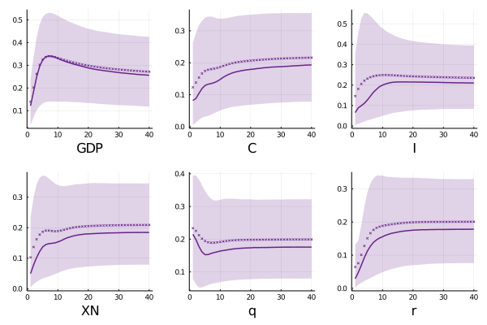

I suggest ....
In the following figures I plot the median and mean response (solid line and marker one, respectively) for emerging commodity exporters with confidence set 68 percent for an horizon of 10 years. We observe an instantaneous impact on GDP near 25 percent, then displaying a hump shape with peak of 45 percent after 4 quarters to ends with a long run weight of one quarter of its volatility. This result is not showing too much asymmetry (the long run average is 25 percent). Similar patterns are exhibited by consumption and investment, with a peak of 30 and 35 percent (both at 8 quarters) respectively, and a long run impact about 22 and 24 percent, among them consumption reports lower short run response (almost half of the initial impact on investment).
Figure 3: Contribution of Global Shocks to Forecast Error Variance of domestic variables
The contribution in trade balance and effective exchange rate are quite similar with both converging to 20 percent in the long run. It reflects .....
In contrast, global shocks looks more important as driver of output fluctuations for developed economies and in opposite to a common belief, their behave is more asymmetric. The maximum contribution is achieved after six quarters in GDP (34 percent), and three years for investment (21 percent) In the long run output reports an exposure is 25 percent, 19 percent for consumption, and 21 percent in investment.
Figure 4: Contribution of Global Shocks to Forecast Error Variance of domestic variablesThe lower effect of global shocks on real output for developed markets in the short run are supported by the differences in channels that these types of economies exhibit. On one hand, in both groups a fundamental global shock explains close 3 percent of trade and real interest rate, meaning that the trade channel is not a big source of divergence. On the other hand, investment are less explained in developed economies (6 percent versus 15 percent). It suggests that financial integration of developed economies plays a role as transmission channel for global shocks.
Here compare the response in both cases and try to connect with structural things
I suggest ....
If you have any doubt, suggestions, or simply want to talk, you can contact with me.